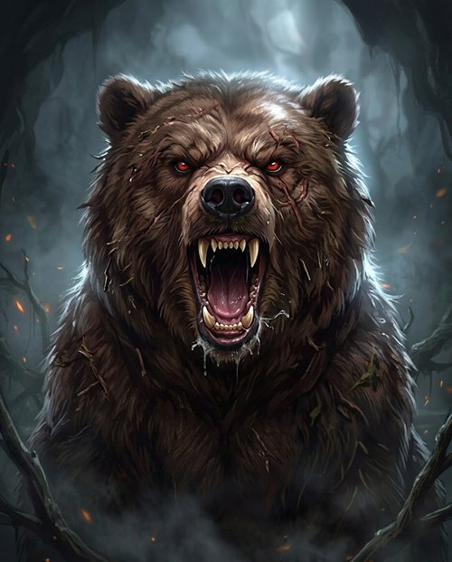
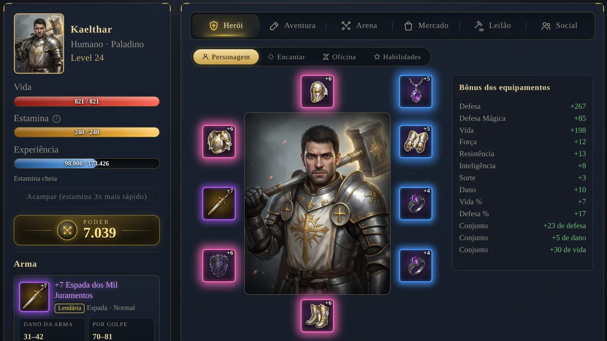
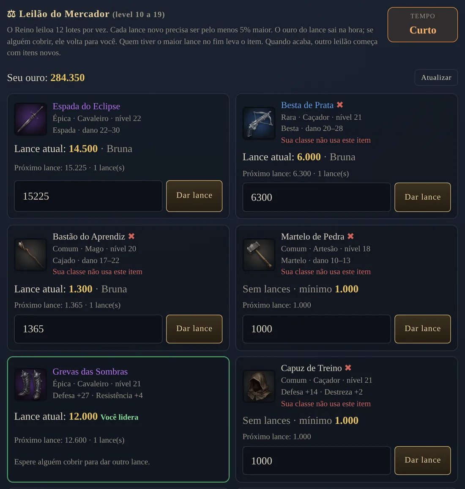
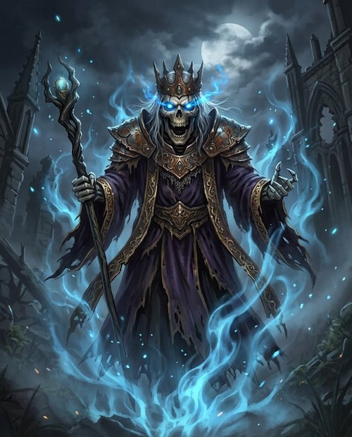
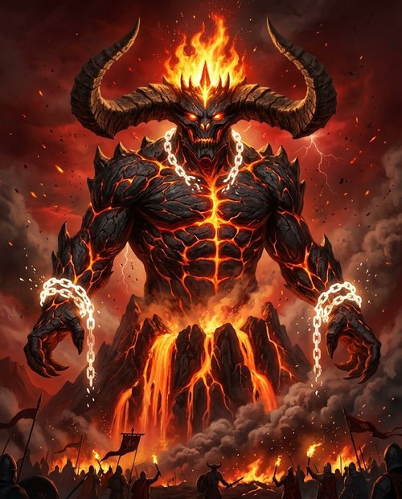
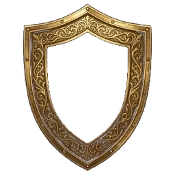
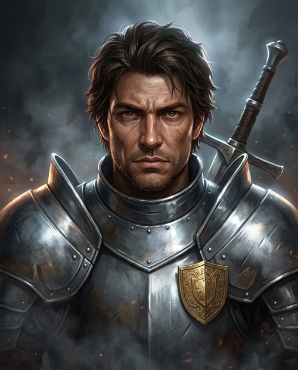
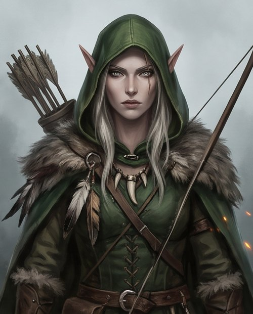
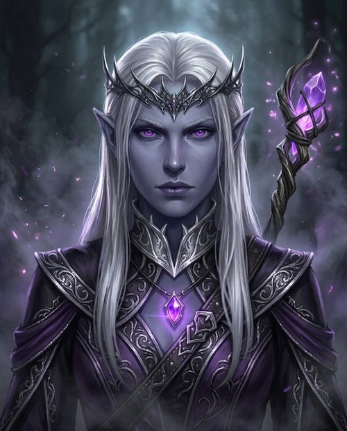
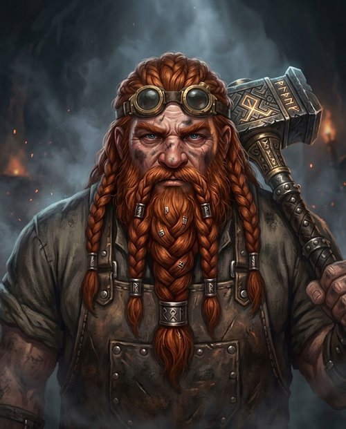

Caçadas
Sete regiões, de Floresta Sombria ao Cume do Fogo Eterno, cada uma com seu chefe.
RPG medieval místico
Os portões de Eldrin estão abertos. Escolha sua classe e prepare sua lenda.
Open Beta · Dezembro 2026
Um RPG de navegador em português, sem download. Crie seu herói, cace monstros em sete regiões, forje e encante seu equipamento, dispute itens raros no leilão e prove seu valor na Arena, onde cada golpe depende de um D20.

Seu herói
Cinco raças, quatro classes e, no level 10, a especialização: o cavaleiro vira Paladino ou Destruidor, o mago vira Bruxo ou Curandeiro.

Leilão do Reino
A cada 4 horas o Reino leiloa 12 lotes: armas, armaduras, joias e pacotes de pergaminhos. Todo mundo do mesmo nível vê os mesmos itens.
Arena
Lutas entre jogadores, por turnos. A cada golpe você rola o dado: um 20 é acerto crítico, um 1 é erro.

Sete regiões, de Floresta Sombria ao Cume do Fogo Eterno, cada uma com seu chefe.

Entre com mais dois jogadores, enfrente a elite e o chefe e leve joias e pergaminhos.

Quando ele desperta, todos os jogadores atacam juntos. Quem dá o golpe final ganha um título.

Funde seu clã, pinte o escudo, suba de nível e enfrente o boss do clã com seus amigos.
"Você chegou na hora certa, jovem. Sou Aldric, o último guardião dos selos. Algo está envenenando esta floresta…"Mestre Aldric · Os Sete Selos, capítulo 1




Siga o Eldrin Online no Instagram e no Facebook para acompanhar as novidades.
⚔ Jogar